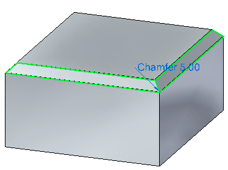
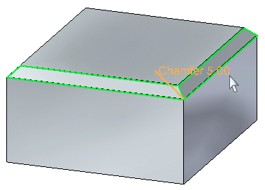
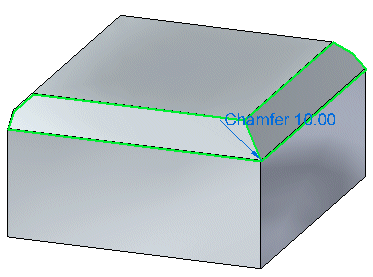
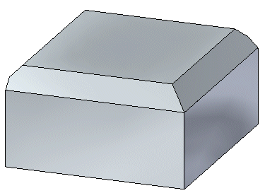
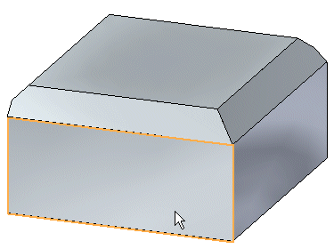
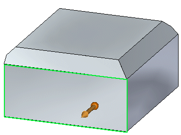
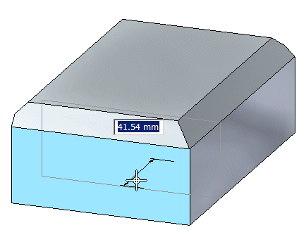

Edit or move a chamfer
You can select a chamfer and directly edit a chamfer to change the chamfer value or you can indirectly edit the chamfer to move a face that adjoins a chamfer.
Edit a chamfer
-
Select a chamfer.

-
Click the chamfer edit handle.

-
Type a new value for the chamfer and click.

-
Click to complete the edit.

Move a face adjoining a chamfer
-
Select an adjoining face of a chamfer.

-
Click the move handle.

-
Move the cursor until the face is positioned approximately where you want it, and then click.

-
Click to complete the move.
How do I
Construct a chamfer featureConstruct a chamfer with equal setbacks
Construct a chamfer with unequal setbacks
Learn more
Adding chamfers to part edgesLook up more details
Chamfer command (feature)Chamfer command bar (ordered)
Chamfer command bar (synchronous)
Chamfer Options dialog box (ordered)
Chamfer Options dialog box (synchronous)
Chamfer Equal Setbacks command
Chamfer Unequal Setbacks command
Chamfer Unequal Setbacks command bar